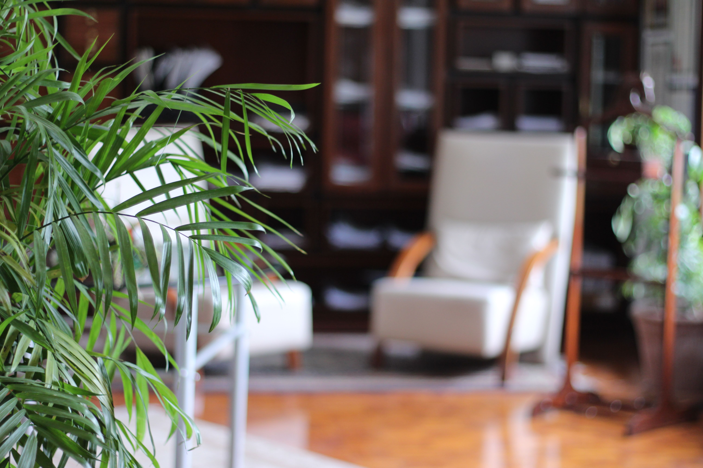
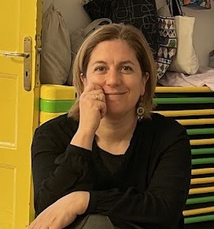

Βιογραφικό
Αναστασία Γιαννοπούλου

Γεννήθηκα στο Ηράκλειο Κρήτης και τα τελευταία χρόνια ζω και εργάζομαι στην Αθήνα. Είμαι ψυχολόγος και ψυχοθεραπεύτρια, με βασική μου εκπαίδευση στη Συστημική Ψυχοθεραπεία και τη Δραματοθεραπεία. Η επαγγελματική μου πορεία έχει διαμορφωθεί μέσα από τη συνάντηση διαφορετικών πεδίων: της ψυχολογίας, της ψυχοθεραπείας και του θεάτρου. Αυτή η σύνδεση αποτελεί σημαντικό κομμάτι του τρόπου με τον οποίο αντιλαμβάνομαι τη θεραπευτική διαδικασία και τη σχέση με κάθε άνθρωπο που απευθύνεται σε εμένα. Είμαι κάτοχος πτυχίου Ψυχολογίας, B.Sc. (Hons), με First Class Honours, από το Canterbury Christ Church University στο Kent. Έχω ολοκληρώσει τετραετή εκπαίδευση στη Συστημική Ψυχοθεραπεία και Θεραπεία Οικογένειας και Ζεύγους στο Συστημικό Κέντρο Εκπαίδευσης και Ψυχοθεραπείας «ΣΚΕΨΥΣ», καθώς και τετραετή εκπαίδευση στη Δραματοθεραπεία στο Ινστιτούτο Ψυχοθεραπείας μέσω Θεάτρου «ΑΙΩΝ». Παράλληλα, έχω ολοκληρώσει το ετήσιο εκπαιδευτικό πρόγραμμα «Βασικές Αρχές στη Συμβουλευτική και την Ψυχοθεραπεία με ΛΟΑΤΚΙ+ άτομα» στο Orlando LGBT+ Ψυχική Υγεία χωρίς Στίγμα, καθώς και μονοετές πρόγραμμα εκπαίδευσης στη θεραπεία ζευγαριών στο «Κέντρο Συστημικής Θεραπείας THESYS». Έχω επίσης παρακολουθήσει την πρώτη εκπαιδευτική περίοδο στις Βασικές Αρχές Διεργασίας Ομάδας στο Processwork Hub. Η σχέση μου με το θέατρο ξεκίνησε πριν από την επαγγελματική μου πορεία στην ψυχολογία. Είμαι απόφοιτος της Δραματικής Σχολής «Θέατρο Τέχνης – Καρόλου Κουν» και από το 2004 ασχολούμαι επαγγελματικά με το θέατρο Playback ως ηθοποιός, συντονίστρια και εκπαιδεύτρια. Είμαι μέλος της ομάδας Playback Ψ από την ίδρυσή της, ενώ συμμετέχω επίσης στη Refraim Team, που σχεδιάζει βιωματικές επιμορφώσεις ενηλίκων μέσα από θεατρικές τεχνικές και συμμετοχικό θέατρο, καθώς και στην Amate Performance, με αντικείμενο δράσεις κοινωνικής παρέμβασης μέσα από τη θεατρική πράξη και την performance.
Η θεραπευτική μου προσέγγιση
Πιστεύω ότι η ψυχοθεραπεία είναι прежде απ' όλα μια σχέση. Ένας χώρος όπου ο άνθρωπος μπορεί να αισθανθεί ότι ακούγεται και γίνεται αποδεκτός χωρίς κριτική, να κατανοήσει καλύτερα τον εαυτό του και να αναζητήσει νέους τρόπους να σχετίζεται με τον εαυτό του και τους άλλους. Η Συστημική προσέγγιση μου επιτρέπει να βλέπω τον άνθρωπο μέσα στο πλαίσιο των σχέσεων, των εμπειριών και των συνθηκών μέσα στις οποίες ζει. Παράλληλα, η εκπαίδευσή μου στη Δραματοθεραπεία και η μακρόχρονη εμπειρία μου στο θέατρο έχουν διευρύνει τον τρόπο με τον οποίο δουλεύω, αξιοποιώντας, όπου αυτό είναι κατάλληλο, δημιουργικές και βιωματικές μεθόδους. Κάθε θεραπευτική πορεία είναι διαφορετική. Για τον λόγο αυτό, η θεραπεία προσαρμόζεται στις ανάγκες, τις δυνατότητες και τον ρυθμό του κάθε ανθρώπου.
Εμπειρία
Εργάζομαι ιδιωτικά με ενήλικες, ζευγάρια και οικογένειες, παρέχοντας ατομική, θεραπεία ζεύγους και οικογενειακή θεραπεία, καθώς και διαδικτυακές (online) συνεδρίες. Στη δουλειά μου έχω συναντήσει ανθρώπους που αντιμετωπίζουν δυσκολίες όπως άγχος, κρίσεις πανικού, φοβίες, δυσκολίες στη διαχείριση συναισθημάτων, ζητήματα αυτοεκτίμησης, συμπτώματα κατάθλιψης και μετατραυματικού στρες, καθώς και δυσκολίες στις διαπροσωπικές και συντροφικές σχέσεις. Παράλληλα, συνοδεύω ανθρώπους που δεν βρίσκονται απαραίτητα σε μια περίοδο κρίσης, αλλά επιθυμούν να κατανοήσουν βαθύτερα τον εαυτό τους, να εξερευνήσουν τις σχέσεις τους και να επενδύσουν στην προσωπική τους ανάπτυξη και αυτογνωσία. Έχω εργαστεί με ομάδες Δραματοθεραπείας στο Κέντρο Έκφρασης και Θεραπείας «Παλμός», ενώ έχω συντονίσει εργαστήρια και εκπαιδευτικές δράσεις γύρω από το θέατρο Playback και τη Δραματοθεραπεία. Έχω επίσης συνεργαστεί με το Δίκτυο Μέλισσα, παρέχοντας ψυχολογική υποστήριξη και συντονίζοντας ομάδες Δραματοθεραπείας για γυναίκες πρόσφυγες. Στο παρελθόν έχω εργαστεί στο Ινστιτούτο Δραματοθεραπείας «ΑΙΩΝ» και στην ιδιωτική ψυχιατρική κλινική «Γαλήνειο Μέλαθρο», με ομάδες ανθρώπων που αντιμετώπιζαν εξάρτηση από ουσίες και με ομάδες ψυχικά ασθενών.
Επαγγελματική και επιστημονική δραστηριότητα
Έχω συμμετάσχει ως εισηγήτρια σε συνέδρια, ημερίδες και εκπαιδευτικές δράσεις στην Ελλάδα και το εξωτερικό, με θεματολογία που αφορά την ψυχοθεραπεία, τη Δραματοθεραπεία, το θέατρο Playback, τη διαφορετικότητα και τη βιωματική εκπαίδευση. Μεταξύ άλλων, έχω συμμετάσχει στο 10ο Παγκόσμιο Συνέδριο του International Playback Theatre Network (IPTN) στο Bangalore της Ινδίας, στο 4ο Διεθνές και 1ο Ευρωπαϊκό Συνέδριο Δραματοθεραπευτών και Παιγνιοθεραπευτών, καθώς και σε συνέδρια και επιστημονικές συναντήσεις που αφορούν την ψυχιατρική, την ψυχοθεραπεία και τη διεπιστημονική συνεργασία. Είμαι μέλος της ΕΛΕΣΥΘ (Ελληνική Εταιρεία Συστημικής Θεραπείας), της ΕΔΠΕ (Ένωση Δραματοθεραπευτών και Παιγνιοθεραπευτών Ελλάδας) και του ΣΕΗ (Σύλλογος Ελλήνων Ηθοποιών). Διαθέτω άδεια άσκησης επαγγέλματος Ψυχολόγου.
Συνεχής εκπαίδευση και εποπτεία
Θεωρώ τη συνεχή εκπαίδευση και την εποπτεία αναπόσπαστο μέρος της δουλειάς ενός ψυχοθεραπευτή. Για τον λόγο αυτό βρίσκομαι σε σταθερή εποπτεία και συνεχίζω να συμμετέχω σε εκπαιδευτικά προγράμματα, σεμινάρια, συνέδρια και επιστημονικές δράσεις που αφορούν τόσο τα πεδία της εξειδίκευσής μου όσο και σύγχρονες ψυχοθεραπευτικές προσεγγίσεις. Στόχος μου είναι να συνεχίζω να εξελίσσομαι ως επαγγελματίας, ώστε να μπορώ να προσφέρω έναν χώρο θεραπείας που χαρακτηρίζεται από ασφάλεια, σεβασμό, αποδοχή και ουσιαστική παρουσία.
Αν αισθάνεστε ότι θα θέλατε να κάνετε ένα πρώτο βήμα, μπορείτε να επικοινωνήσετε μαζί μου για να συζητήσουμε τις ανάγκες σας και να δούμε αν ο τρόπος δουλειάς μου ταιριάζει σε αυτό που αναζητάτε.**